Videos, real jobs, and the equipment we use to defeat what's lurking in your pipes.
Real hydro jetting, camera inspections, and underground problem-solving — straight from the field. Every camera inspection records clear HD footage you can review, so you see exactly what we see. Subscribe to the channel to follow along.
Updates, behind-the-scenes jobs, and the occasional good-natured flex about a stubborn clog defeated.
f Drain Flow on FacebookReal callouts around the Chicagoland area — clearing lines, chasing roots, and inspecting what's going on underground.
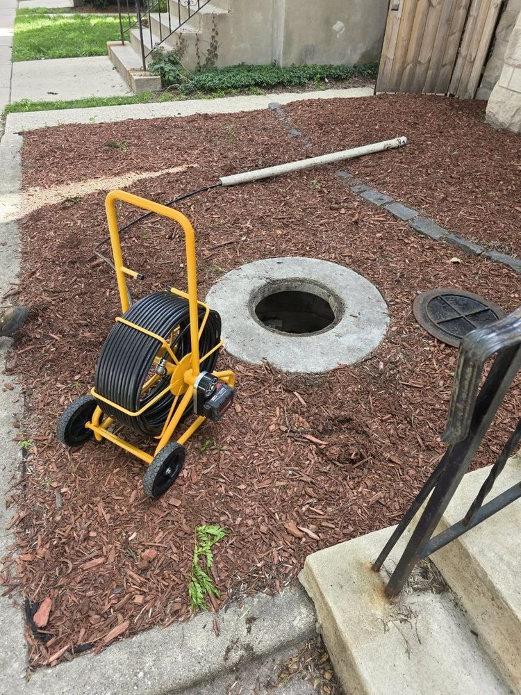
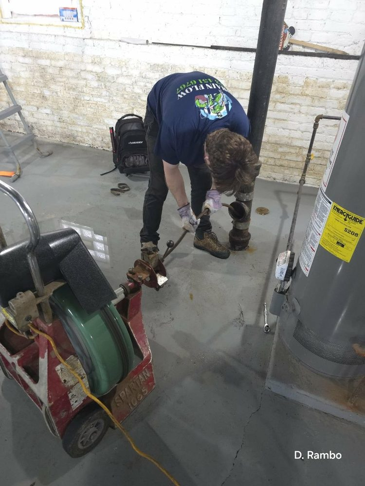
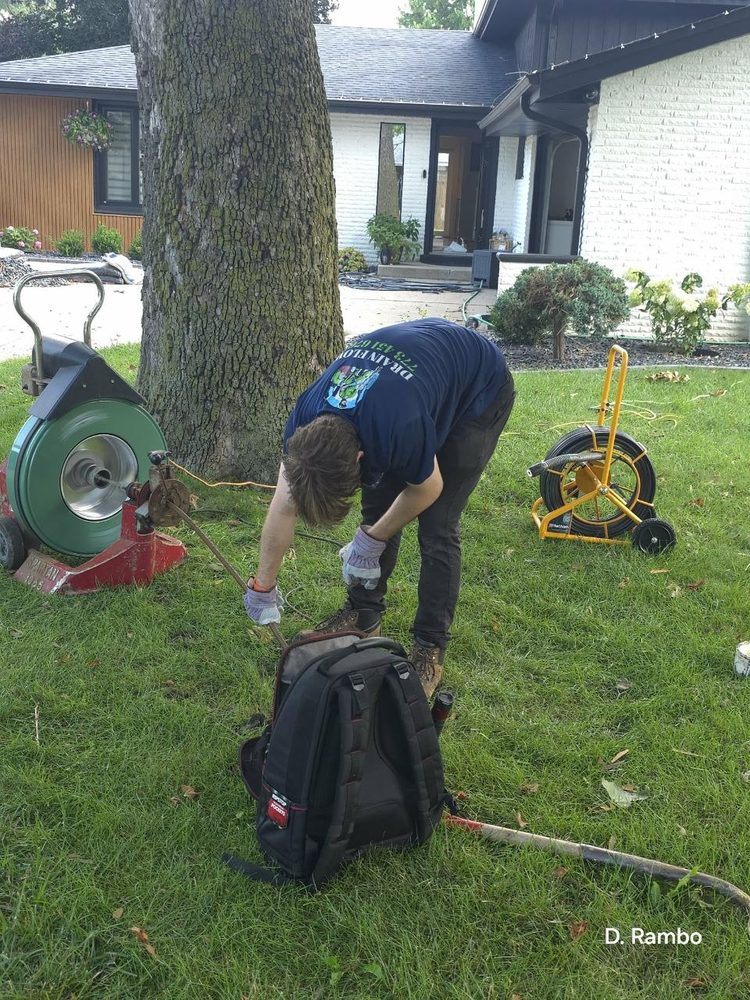
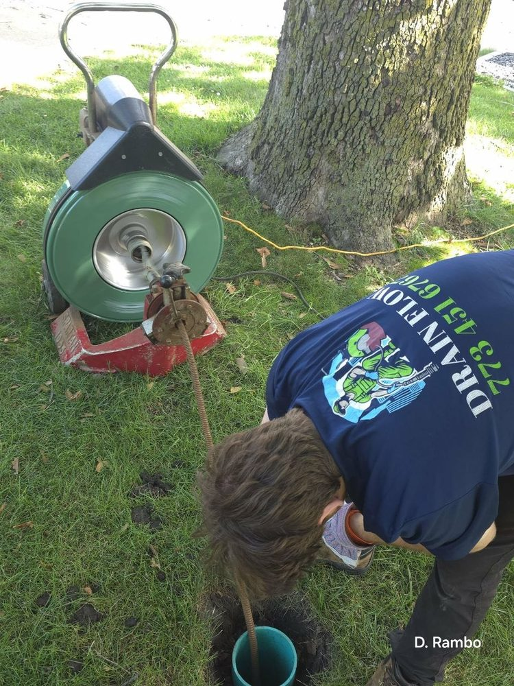
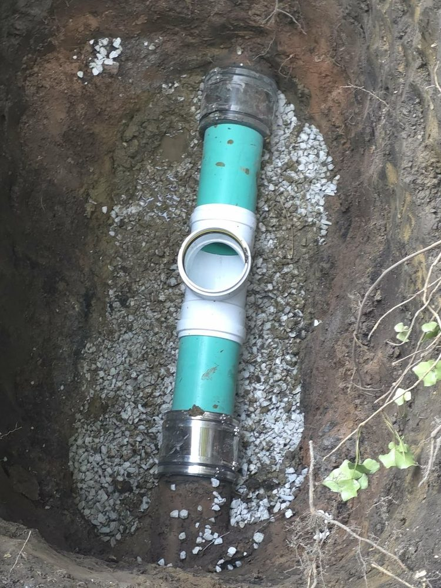
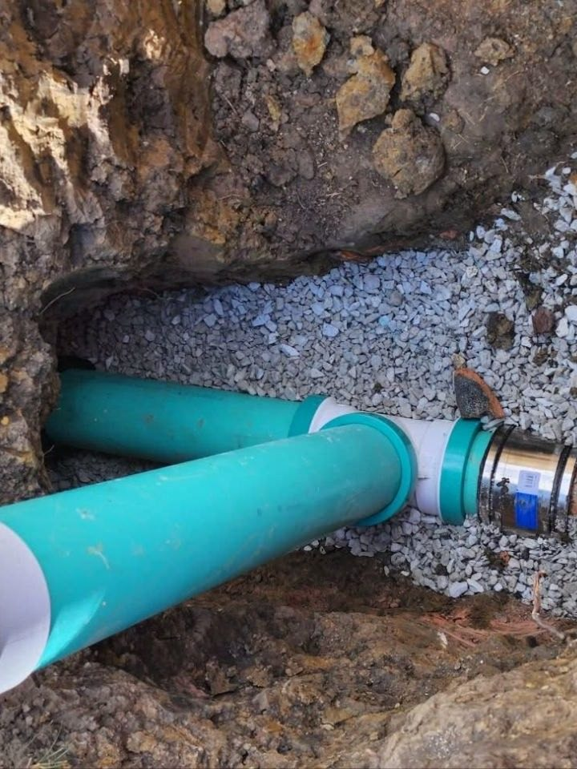
The battle-tested machines behind every job.
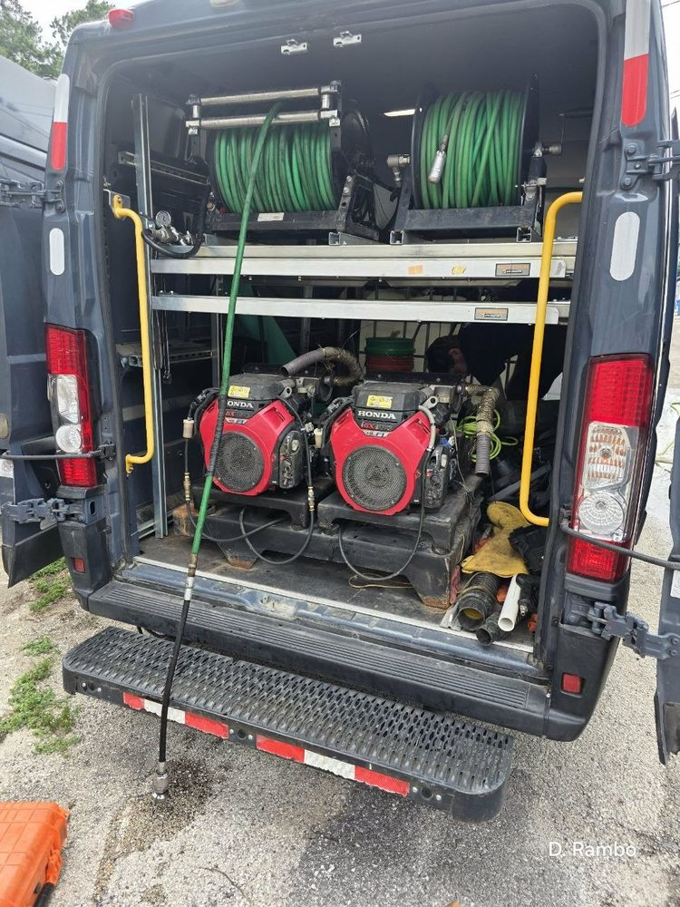
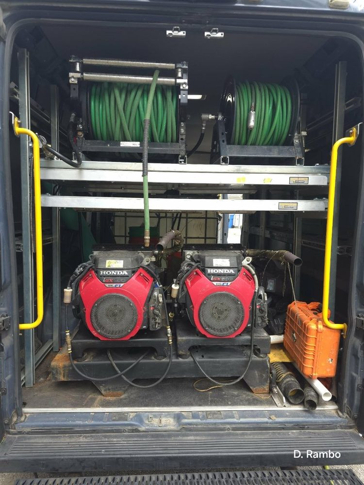
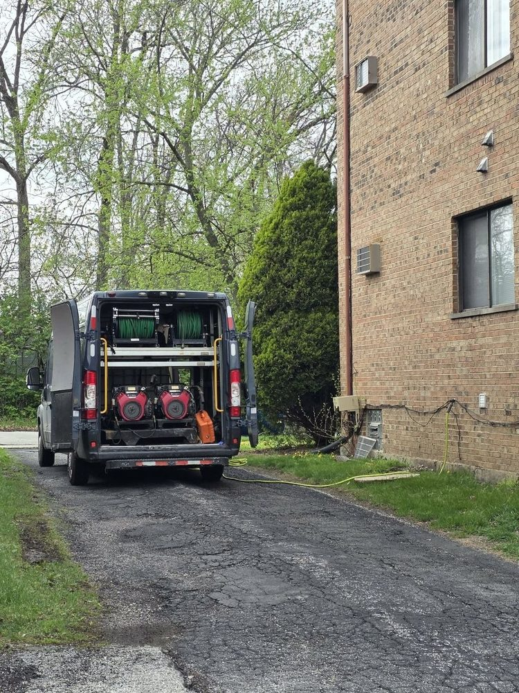
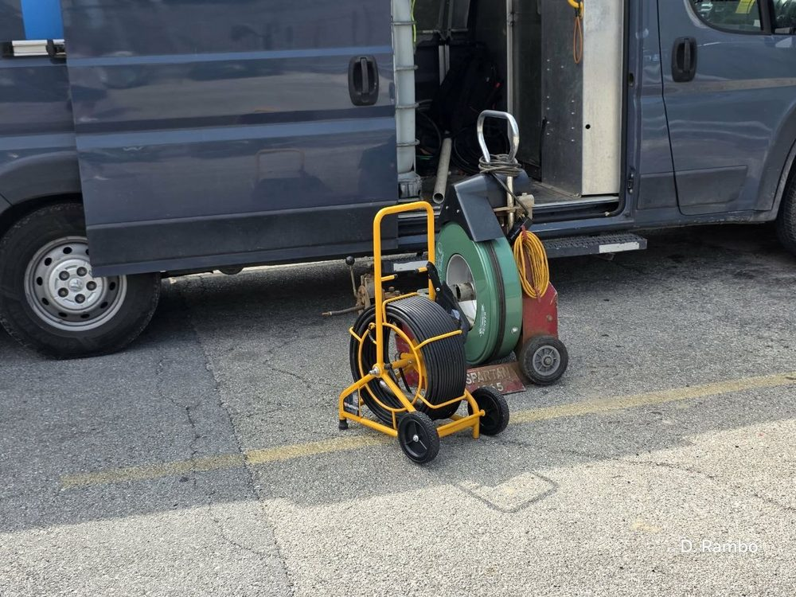
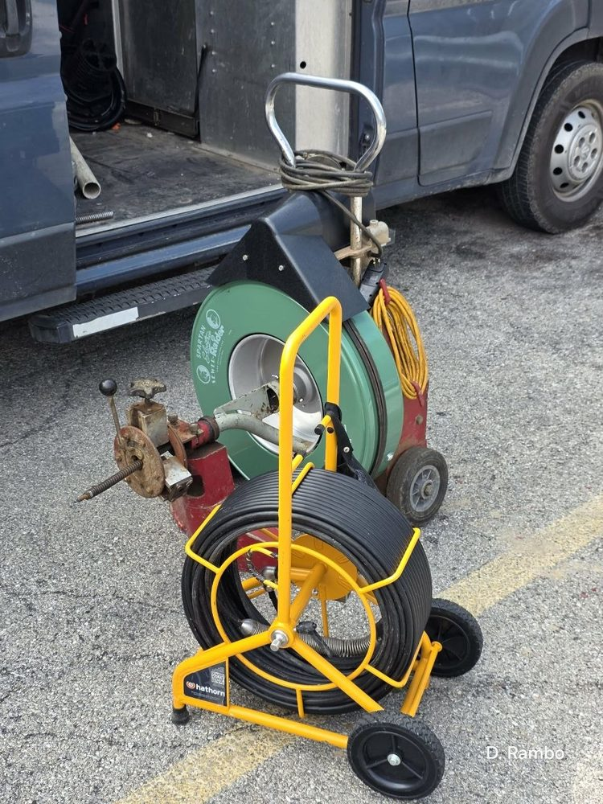
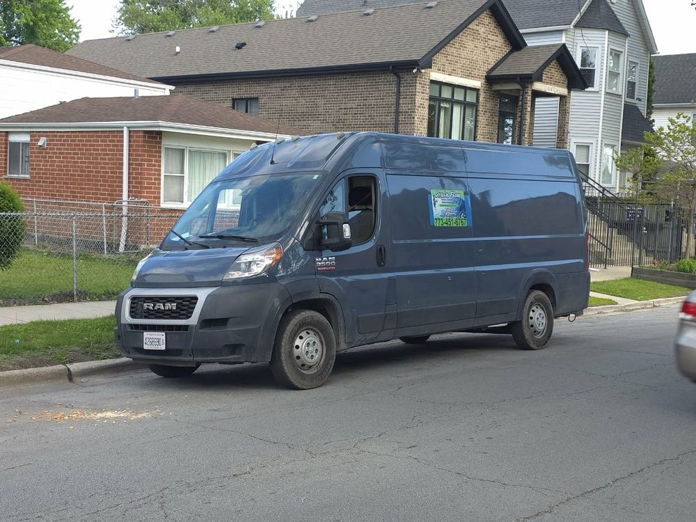
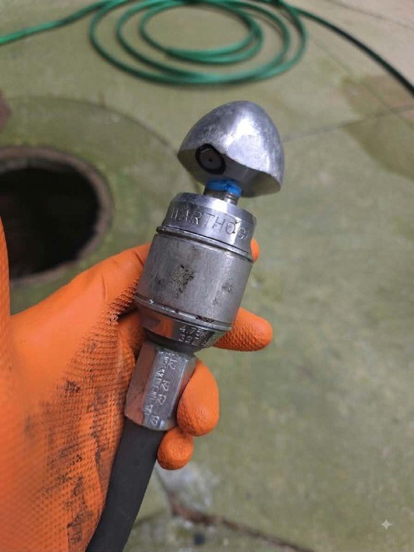